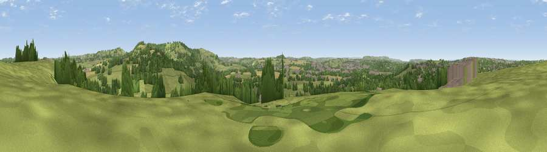

Viewpoint near Bitton
#32888 in England · top 62% of its area beats it · near BittonThe view, rendered

A 360° render of this exact spot computed from the terrain model, tree cover and land cover — summer colours, afternoon light, calibrated against photographs of famous viewpoints. Real trees, hedges and buildings will differ in detail.
The panorama
Grey silhouette: terrain skyline in each direction (720 bearings, Earth curvature and refraction included). Dashed green: skyline with trees (+15 m) and buildings (+8 m) as obstacles. Blue strip: how far the ground is visible on each bearing.
Where the view opens
Wedge length = distance to the farthest visible ground on that bearing (vegetation-aware). Rings at 10, 25 and 50 km.
What fills the view
61% grassland · 28% woodland · 6% cropland · 6% built-up
Angular shares of the visible panorama (visual magnitude), not map area. Landscape diversity 0.43 (0–1 Shannon).
Key numbers
More beautiful places nearby
The staircase of upgrades: each row has a higher view potential than everything closer. Driving times are estimates from straight-line distance, calibrated against real road routing — check an actual route before setting out.
| Place | Direction | Drive | Score |
|---|---|---|---|
| Viewpoint near Oldland Common | NNE · 0 km | ~2 min | 49.0 |
| Viewpoint near Upton Cheyney | E · 2 km | ~5 min | 62.1 |
| Viewpoint near Beach | E · 3 km | ~7 min | 72.5 |
| Viewpoint near North Stoke | ESE · 3 km | ~8 min | 75.4 |
| Hanging Hill | E · 3 km | ~8 min | 76.4 |
| Beacon Batch | SW · 23 km | ~38 min | 79.4 |
| Viewpoint near Stinchcombe | N · 28 km | ~45 min | 80.5 |
| Garway Hill | NNW · 60 km | ~82 min | 84.6 |
51.43102, -2.46205 · source: screening · position refined by local search. Computed location — check access rights before visiting.